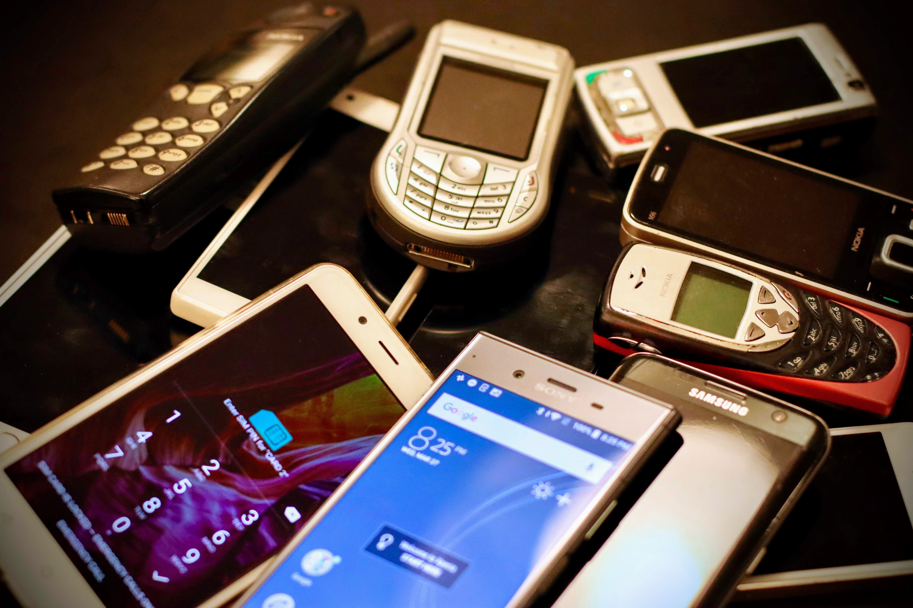
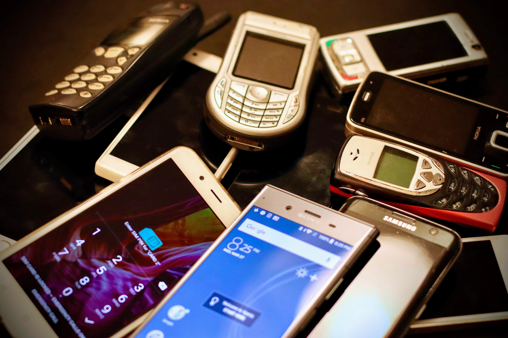

Site Name
E-Goods
Site Purpose
Do you have old electronics. that you do not know what to do with? Imagine a website that was connected with your local community that will allow individuals to interact with in order to sell and buy used electronics. My website will allow users to be able to interact with their community and create in=person transactions that will benefit both parties involved. You know the popular saying, "One man's trash is another man's treasure". Lets find out with hidden treasure is available to you or someone else!
Target Audience
The target audience for this website will be towards college students residing within Rexburg. It is assumed that this population will be the most tech savy and will be a bulk of the target. However, with that being said, we will like to target anyone at the age of 18+.
Color Scheme
The color schemes used are #FDFEFE for the background, #7B7D7D will be for the nav, and #2C3E50 will be for the paragraphs
Typography
My heading will be Lora and my regualar fonts will be Open Sans
Content Section
People will click on the website in order to find other individuals within the local community that are either interested in selling or buying electronics. Information that will be required from users will be a zipcode that should be provided through making an account. This information is neccessary in order for people to have a way to communicate with others.
This is site will serve as a way for people to communicate and create transactions within the website. This will be a more convinient way for people to feel safe with in-person transaction and not have to feel any anxiety towards the possibility of the user being scammed by another user through shipping.
Potential images to use
 
